Bem vindo ao Guia do Projeto Linux!
Etapa 1: Configuração do Ambiente
- Criar uma VPC com:
2 sub-redes públicas e 2 sub-redes privadas
Uma Internet Gateway conectada às sub-redes públicas
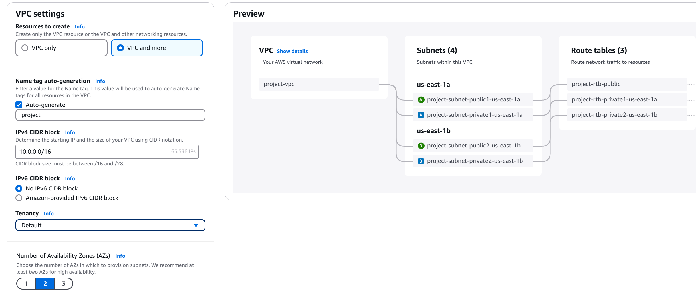
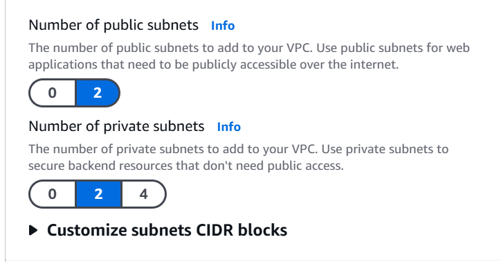
- Criar uma instância EC2 na AWS:
Crie uma chave PEM para aumentar sua segurança:
Dentro da instância é possível criá-la
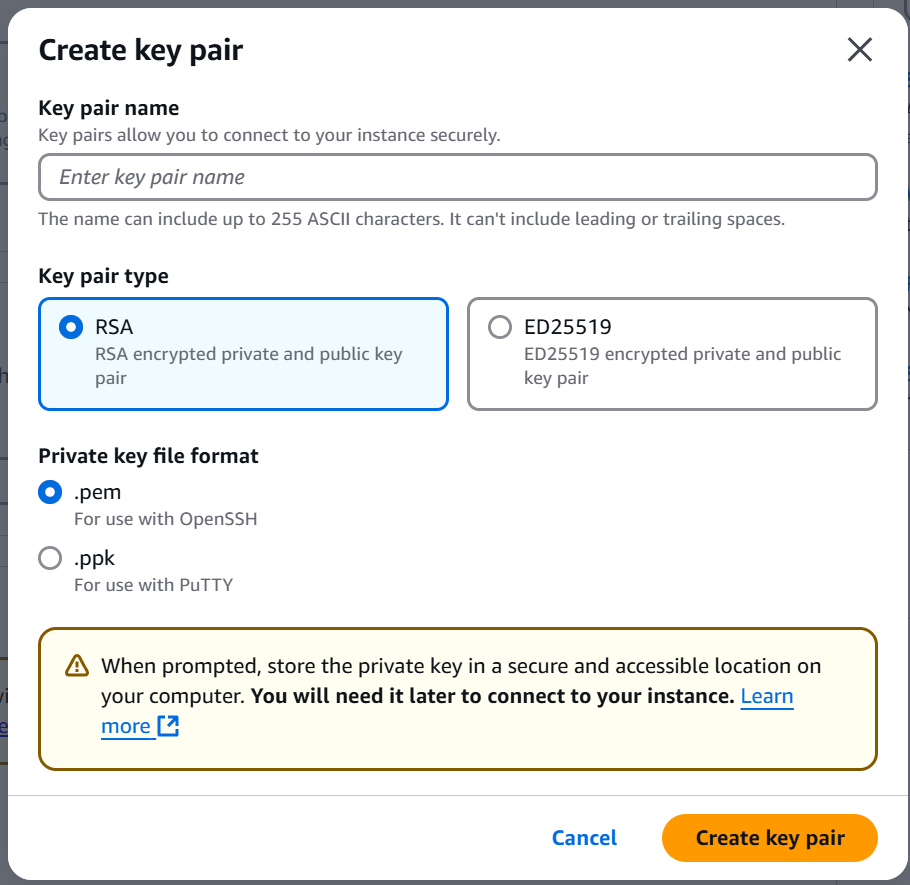
Com Sistema Operacional Ubuntu, Debian ou Amazon Linux 2023
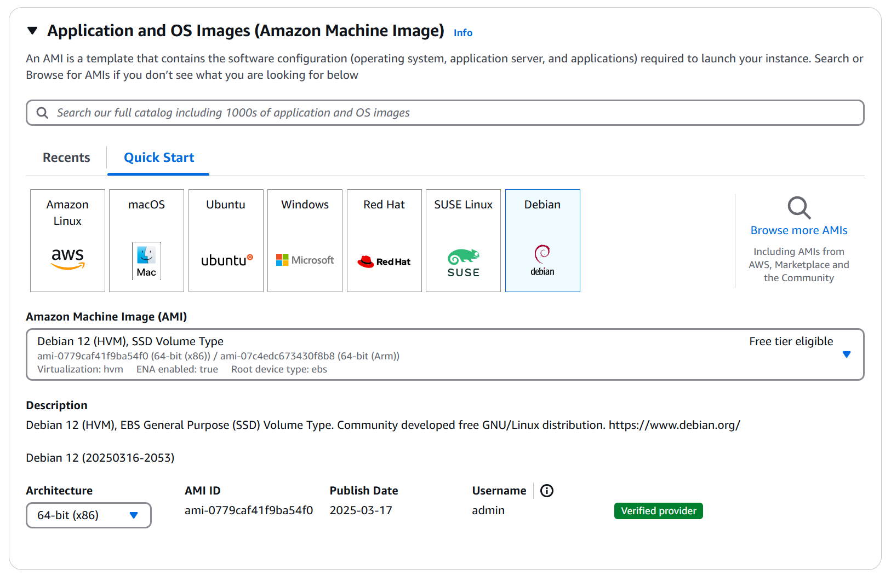
- Instalar na sub-rede pública criada anteriormente
Selecione a VPC criada e sub-rede pública, também deixe enable a auto associação pública de IP
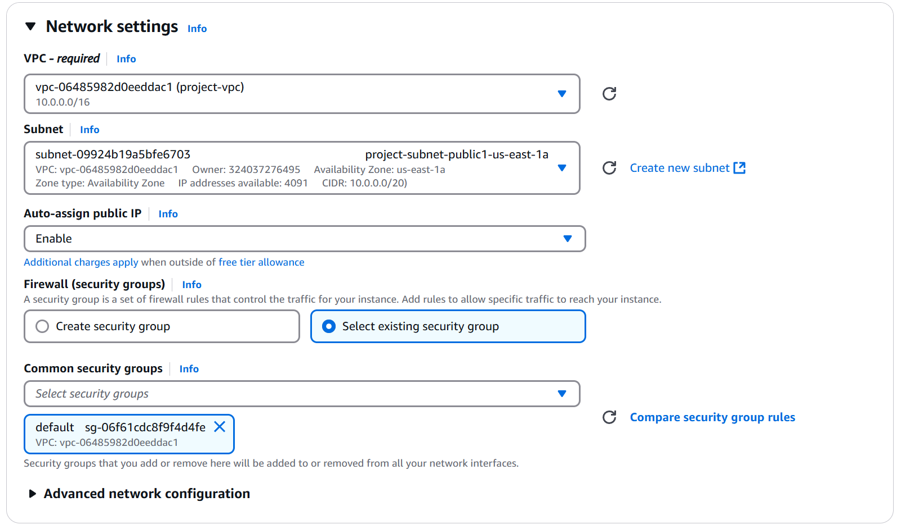
- Acessar a instância via SSH para realizar configurações futuras
Com a instância já criada, clique em Security Groups na parte de Security
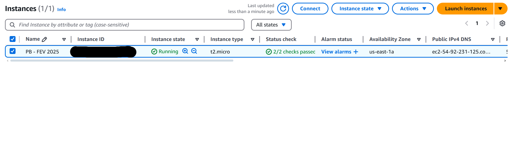
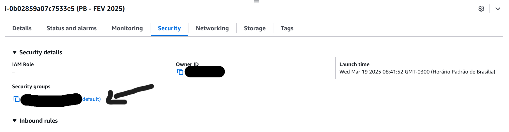
- Associar um Security Group com regras InBound e OutBound
Selecione edit InBound rules para criar a regra Inbound
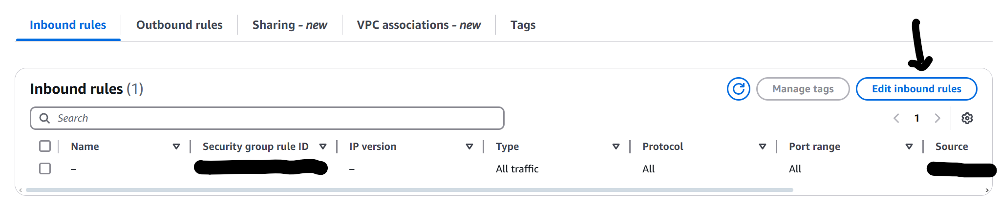
- As configurações das regras InBound são:
HTTP: Anywhere Ipv4
SSH: My IP
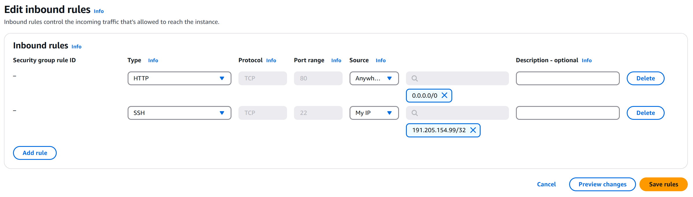
- Seguindo os mesmos passos no OutBound
Selecione edit OutBound rules para criar a regra OutBound
- As configurações das regras OutBound são:
HTTP: Anywhere Ipv4
HTTPS: Anywhere IPpv4
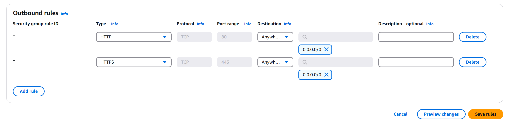
- Configurando ambiente WSL para acessar a Instância
No microsoft store é possível instalar um sub-sistema Linux na sua máquina Windows
Com as configurações de Security Group feitas, agora é hora de acessar a instância
Para isso, basta pesquisar a mesma AMI selecionada na criação da EC2 e o WSL.
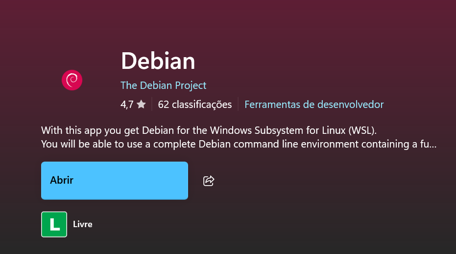
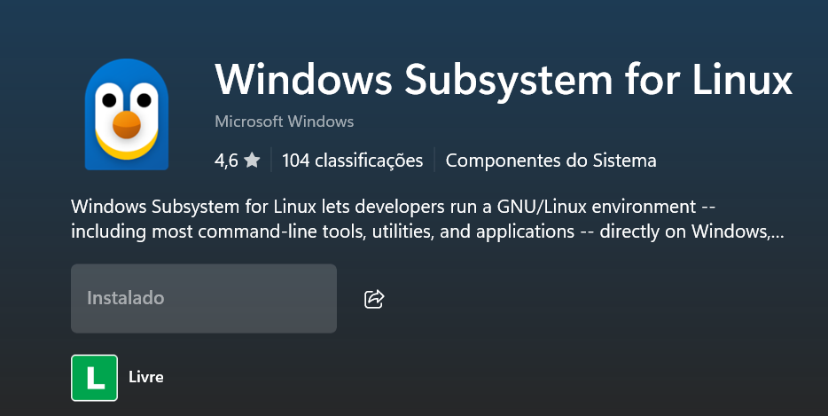
Instalando o WSL
Para instalar o WSL, basta entrar no Windows Powershell e digitar: wsl --install -d Debian
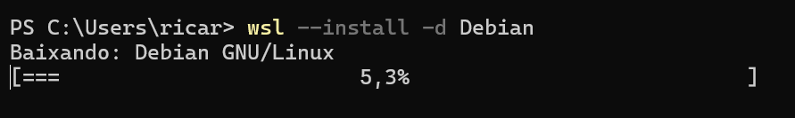
Conectando-se a instância
Mova o local da sua chave (se não foi alterado é em Downloads):
sudo mv /mnt/c/Users/"seu_usuário"/Downloads/"nome_chave.pem" /home/"usuário_linux"/
Para se conectar a instância digite o seguinte comando: ssh -i "nome_chave.pem" admin@IP_da_EC2
Etapa 2: Configuração do Servidor Web
- Instalar o servidor Nginx na EC2 com os seguintes comandos:
sudo apt update && sudo apt upgrade
sudo apt install nginx
sudo systemctl status nginx
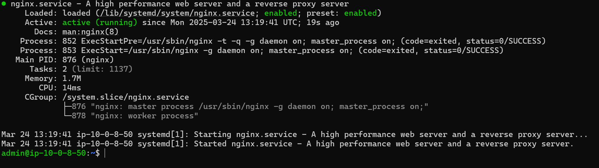
- Criar uma página HTML simples para ser exibida pelo servidor
Com o comando cd /var/www/html você acessa o diretório para editar o html da página
Com o comando nano index.html você consegue editar a página html
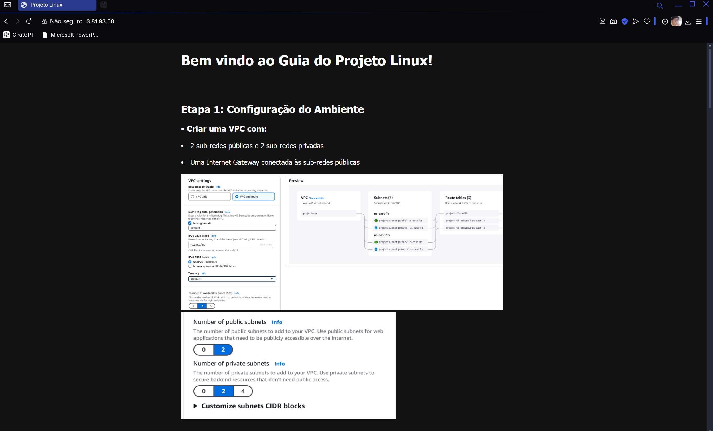
Etapa 3: Monitoramento e Notificações
- Criar um script em Bash ou Python para monitorar a disponibilidade do site
Para utilizar o script crie um arquivo .sh
Edite a permissão para executar com o comando: sudo chmod +x nome_script.sh
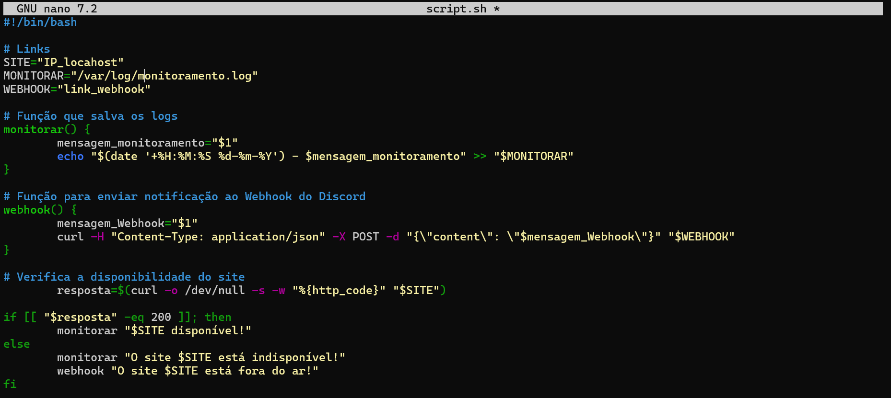
- Caso queira copiar o Script, não se esqueça de editar os seguintes campos:
SITE: Substitua pelo IP da sua máquina criada
MONITORAR: Lembre-se de criar um arquivo em branco monitoramento.log dentro de /var/log
WEBHOOK: Crie um webhook no Telegram, Discord ou Slack para receber as notificações e copie o link
- Criação do Webhook no discord
Dentro de um canal, clique em editar canal
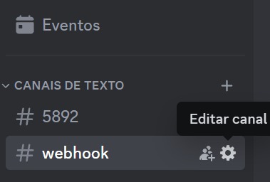
Na parte de integração selecione Webhooks
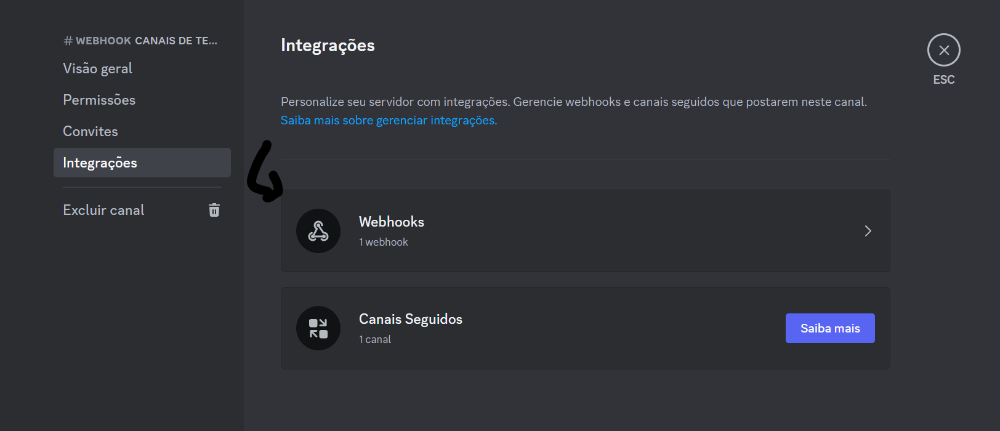
Basta copiar a URL e colar no script
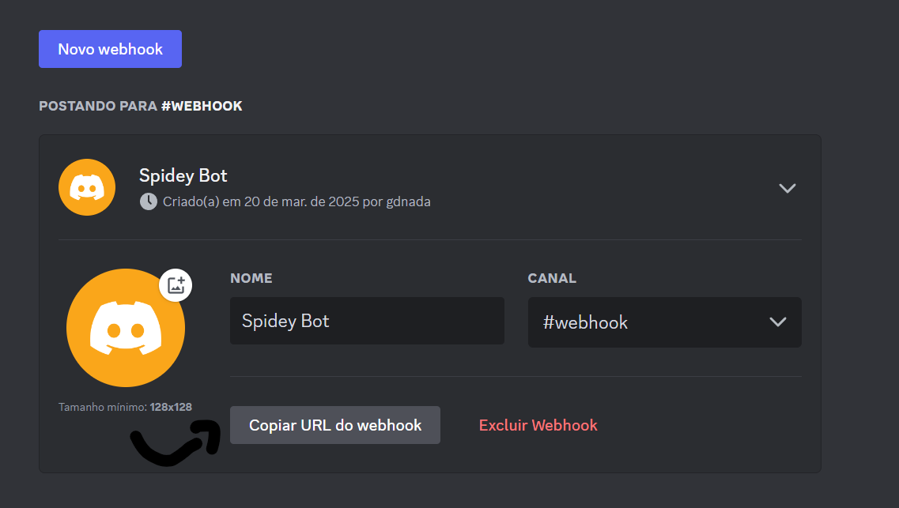
- O script deve:
Verificar se o site responde corretamente a uma requisição HTTP
Criar logs das verificações em /var/log/monitoramento.log
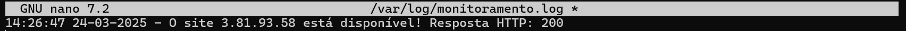
Enviar uma notificação via Discord, Telegram ou Slack se detectar indisponibilidade
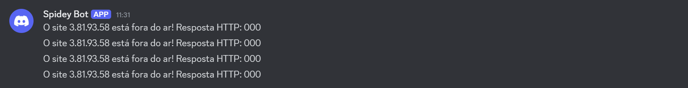
- Configurar o script para rodar automaticamente a cada 1 minuto usando cron ou systemd timers
Use o comando "crontab -e" para configurar a automatização do script
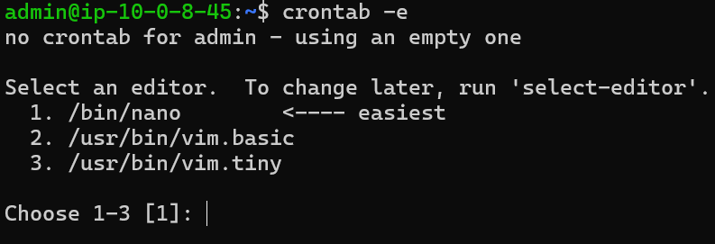
- Basta adicionar o comando "* * * * * /var/www/html/nome_script.sh"
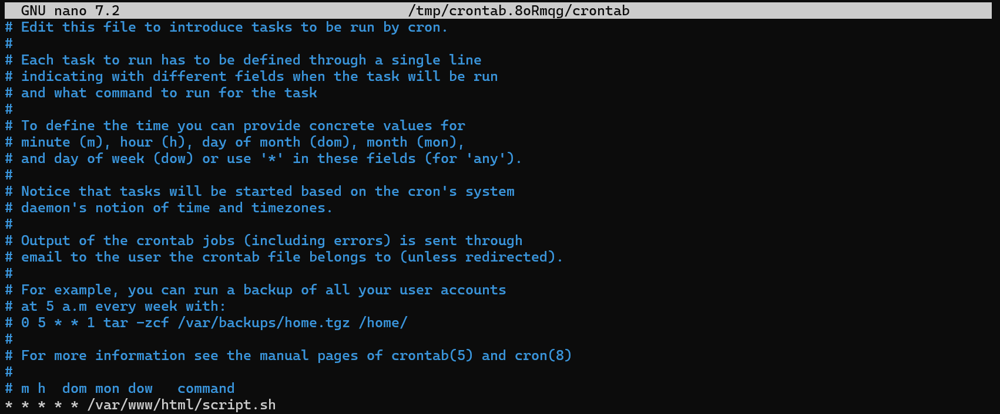
Etapa 4: Automação e Testes
- Testar a implementação:
Não esqueça de dar permissão ao script com o comando: sudo chmod +x nome_script
Dado a permissão basta executar com o comando: ./nome_script.sh
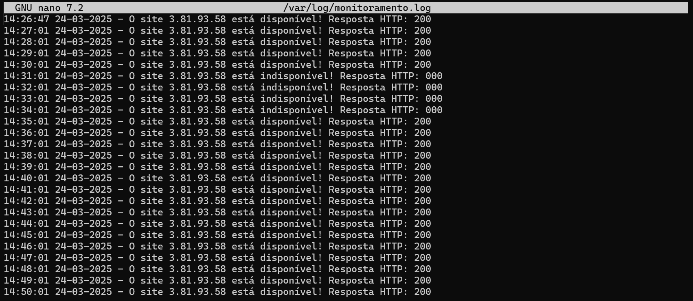
Para conferir mais do autor acesse
github.com/rafdavis.
Obrigado por acessar o guia do Projeto Linux!